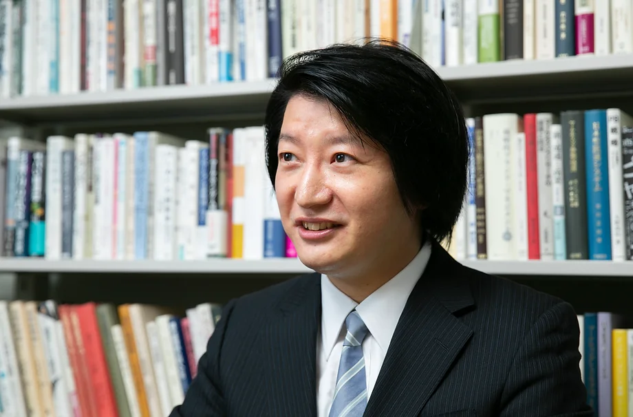

教授紹介
慶應義塾大学 商学部 教授 高田英亮先生
マーケティング戦略論、流通チャネル論を研究領域として、日本のマーケティング研究の第一線に立たれています。
高田 英亮
紹介
優しく穏やかで、親身になって学生のことを考えてくれる教授です。休み時間にお話したり、合宿のスポーツ大会にも積極的に参加してくださるなど、ゼミの仲良く楽しい雰囲気を一緒に作ってくださっています。
専門領域
マーケティング論、流通論
略歴
- 2000年 神奈川県立湘南高校 卒業
- 2004年 慶應義塾大学商学部 卒業
- 2006年 慶應義塾大学大学院商学研究科修士課程 修了
- 2008-11年 慶應義塾大学商学部 助教
- 2009年 慶應義塾大学大学院商学研究科博士課程 単位取得退学
- 2011-14年 慶應義塾大学商学部 専任講師
- 2012年 慶應義塾大学大学院商学研究科 博士号取得
- 2014-20年 慶應義塾大学商学部 准教授
- 2020年- 慶應義塾大学商学部 教授
論文
- Human asset specificity, physical asset specificity, and direct distribution
- 髙田 英亮, マーク・パリー
- Industrial Marketing Management (Elsevier)105 515-531 2022年08月
- 研究論文(学術雑誌), 共著, 筆頭著者, 査読有り
- マーケティング戦略におけるビッグデータの活用
- 髙田 英亮
- 三田商学研究(慶應義塾大学出版会) 63(4) 137-149 2020年10月
- 研究論文(大学, 研究機関等紀要), 単著
- Transaction costs and capability factors in dual or indirect distribution channel selection: An empirical analysis of Japanese manufacturers
- 髙田 英亮
- Industrial Marketing Management(Elsevier) 83 94-103 2019年11月
- 研究論文(学術雑誌), 単著, 査読有り
- レプリケーション研究の方法
- 髙田 英亮
- JSMDレビュー(日本商業学会) 1(2) 65-71 2017年12月
- 研究論文(学術雑誌), 単著, 査読有り
- Effects of industry forces, market orientation, and marketing capabilities on business performance: An empirical analysis of Japanese manufacturers from 2009 to 2011
- 髙田 英亮
- Journal of Business Research(Elsevier) 69 (12) 5611-5619 2016年12月
- 研究論文(学術雑誌), 単著, 査読有り
- デュアル・チャネルの選択に関する予備的検討
- 髙田 英亮
- 三田商学研究(慶應義塾大学商学会) 58 (2) 155-168 2015年06月
- 研究論文(大学, 研究機関等紀要), 単著
- Forces, Firm Resources, Market Orientation, Marketing Capabilities, and Business Performance
- 髙田 英亮
- Discussion Paper Series(慶應義塾大学商学会) 2015年01月
- 研究論文(大学, 研究機関等紀要), 単著
- 企業における市場知識の統合
- 髙田 英亮
- 企業の知識理論(中央経済社) 112-138 2014年06月
- 研究論文(研究会, シンポジウム資料等), 単著
- チャネル統合問題へのDavid Teeceの企業境界論の適用
- 髙田 英亮
- 流通研究(日本商業学会) 16 (1) 77-97 2013年10月
- 研究論文(学術雑誌), 単著, 査読有り
- Integration: An Explanation According to David Teece's Theory of the Boundaries of the Firm
- 髙田 英亮
- The Proceedings of the 2013 World Marketing Congress(Academy of Marketing Science) 2013年07月
- 研究論文(国際会議プロシーディングス), 単著, 査読有り
- 取引費用要因とケイパビリティ要因がチャネル統合度に及ぼす影響
- 髙田 英亮
- 流通研究(日本商業学会) 15 (1) 15-38 2013年02月
- 研究論文(学術雑誌), 単著, 査読有り
- Teeceの企業境界論によるチャネル統合の説明
- 髙田 英亮
- Discussion Paper Series(慶應義塾大学商学会) 2012年12月
- 研究論文(大学, 研究機関等紀要), 単著
- Influences of Transaction Cost Factors and Capabilities Factors on the Degree of Channel Integration
- 髙田 英亮
- The Proceedings of the 2011 World Marketing Congress(Academy of Marketing Science) 2011年07月
- 研究論文(国際会議プロシーディングス), 単著, 査読有り
- マーケティング・チャネルの選択問題；取引費用理論とケイパビリティ理論による分析
- 髙田 英亮
- 博士論文(慶應義塾大学商学研究科) 2011年
- 研究論文(学術雑誌), 単著, 査読有り
- チャネル選択問題に関する取引費用分析の再検討：ケイパビリティ理論を踏まえて
- 髙田 英亮
- 三田商学研究(慶應義塾大学商学会)52 (4) 41-64 2009年10月
- 研究論文(大学, 研究機関等紀要), 単著, 査読有り
- Choice in Foreign Markets: Capabilities and Transaction Cost Approaches
- 髙田 英亮
- The Proceedings of the 2009 World Marketing Congress(Academy of Marketing Science) 2009年07月
- 研究論文(国際会議プロシーディングス), 単著, 査読有り
- 海外流通チャネルの選択問題：ケイパビリティ理論と取引費用理論による分析
- 髙田 英亮
- 三田商学研究(慶應義塾大学商学会) 51 (5) 73-97 2008年12月
- 研究論文(大学, 研究機関等紀要), 単著, 査読有り
- 流通チャネルの選択と構造的進化：ケイパビリティ・ICT・アーキテクチャ戦略・取引費用
- 髙田 英亮
- 三田商学研究(慶應義塾大学商学会) 49 (7) 147-171 2007年02月
- 研究論文(大学, 研究機関等紀要), 単著, 査読有り
受賞
-
義塾賞
- 2019年12月, 慶應義塾大学
-
優秀論文賞
- 2014年05月, 日本商業学会, 取引費用要因とケイパビリティ要因がチャネル統合度に及ぼす影響
担当授業（2024年度）
- 商業学特殊研究
- 商業学特殊演習
- 商業学演習
- 研究会
- マーケティング・マネジメント論
- 商業学基礎
- マクロ・マーケティング各論（流通論）
- ミクロ・マーケティング特論
社会活動
- 日本商業学会関東部会 コメンテーター
- 講演 チャネル形態の選択問題に関する既存研究の紹介
- 日本商業学会全国研究大会ドクトラル・コロキアム コーディネーター
所属学協会
- Academy of Marketing Science
- 日本商業学会
公式ホームページ
髙田教授についての詳しい情報は、こちらをご覧ください。